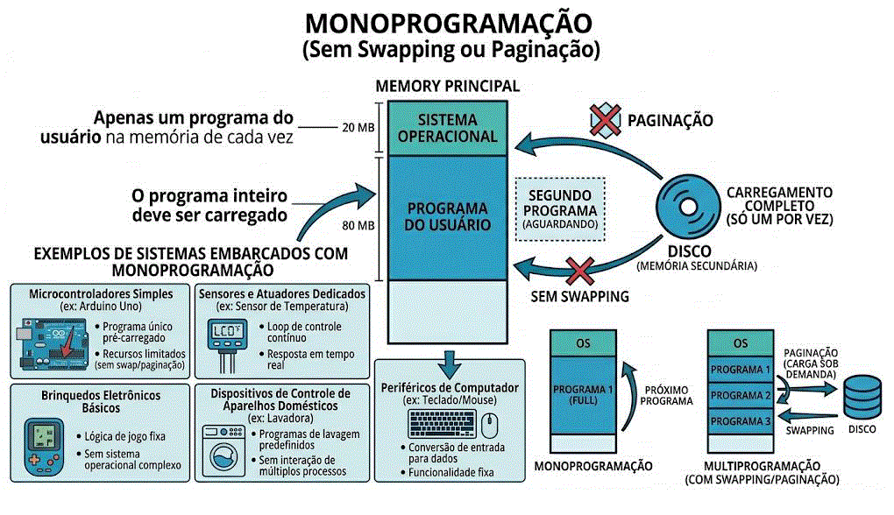

Atribuição de Endereços de Memória (Address Binding)
Para que um programa rode, suas variáveis e instruções precisam receber endereços físicos na RAM. Esse mapeamento pode ocorrer em três momentos:
- Em tempo de compilação: Se já soubermos exatamente onde o programa vai ficar na RAM, o código compilado já recebe endereços físicos absolutos.
- Em tempo de carga: O compilador gera um "código relocalizável". O endereço final só é amarrado no momento em que o Sistema Operacional carrega o programa na memória para abri-lo.
- Em tempo de execução: O programa pode ser movido de um lugar para outro na memória RAM enquanto está a rodar. Para que isso funcione, o sistema exige um hardware especial chamado MMU (Memory Management Unit), responsável por traduzir os endereços lógicos em endereços físicos em tempo real. Como a Tabela de Páginas usada nessa tradução fica armazenada na própria RAM, cada busca exigiria dois acessos físicos à memória (um para ler a tabela e outro para ler o dado em si), tornando o sistema lento. Para resolver esse gargalo, a MMU utiliza a TLB (Translation Lookaside Buffer), uma memória cache ultrarrápida e exclusiva que guarda as traduções de endereços mais recentes, eliminando a necessidade da dupla consulta e acelerando drasticamente o processo de paginação.
Tipos de Gerenciamento de Memória
O Gerenciador de Memória do SO adota estratégias que se dividem, basicamente, em dois grupos:
- Processos fixos na memória principal: O programa é carregado na RAM e fica no mesmo lugar, sem interrupções, até o usuário fechá-lo.
- Processos móveis (Uso de Disco/RAM): O SO move os processos dinamicamente entre a memória principal e a memória secundária (disco) durante a execução, utilizando técnicas como Swapping ou Paginação.
Monoprogramação (Sem Swapping ou Paginação)
O modelo mais primitivo (Monoprogramação): Neste formato, a RAM é dividida em apenas duas partes: uma reservada ao Sistema Operacional e a outra dedicada a um único programa de usuário por vez.
- O Problema: Gera um desperdício massivo de recursos físicos. Se o programa for maior que a RAM, ele não roda. Além disso, caso o programa precise aguardar uma ação do usuário (operações de I/O), a CPU fica 100% ociosa, pois não há outro processo na fila para aproveitar o processador.
- Uso Atual: Tornou-se totalmente obsoleto para computadores pessoais modernos, mas ainda é amplamente utilizado em sistemas embarcados simples, como calculadoras e painéis de micro-ondas.

O que fragmentação interna?
Ocorre quando o espaço de memória alocado para um processo é maior do que o processo realmente precisa. O espaço que sobra fica "preso" dentro da partição do processo e não pode ser usado por mais ninguém.
O que fragmentação externa?
Ocorre quando existe espaço total suficiente na memória RAM para abrir um novo programa, mas esse espaço está espalhado em vários pequenos "buracos" não contíguos (separados). Como o processo exige um bloco inteiro contínuo, o SO não consegue alocá-lo e acusa falta de memória.